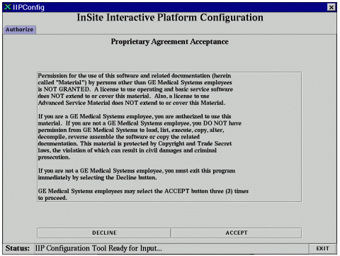

GE Exclusive Use Only
Direction 5440000, Rev# 5
Signa HDxt Service Methods
Module Version 2.0, Version Date 6/3/10
GE Exclusive Use Only |
| Required Persons | Preliminary Reqs | Procedure | Finalization |
|---|---|---|---|
| 1 |
Go to the install GUI window, and select the Service SW/2nd Image Disk/InSite tab and proceed to Load Restricted Service or Load Advanced Service. (Restricted Service Software is only available for GE use; Advanced Service Software is only available to sites with a valid Advanced Service Package Limited License.)
To load Restricted Service Software on the system:
Place the appropriate Restricted Service CD-ROM in the host CD-ROM drive.
Select [Load Restricted Service].
Read the proprietary message window, and respond accordingly.
A message “Restricted software load in progress…” will display. The load will take 5 to 10 minutes depending on host type.
Illustration 1 will display near the end of the software load. GEMS Field Engineers loading GEMS Restricted Service Software should also configure InSite at this time (see Illustration 1). If you do not have an InSite modem or you will configure it later, click on [Exit].
Refer to procedure “Insite/IIP Installation” to complete the Insite configuration on the Service Methods CD-ROM.
Wait for the message “Restricted Service load done” in the Install GUI status bar (at bottom of window).
Illustration 1: PROPRIETARY AUTHORIZATION TAB

To load Advanced Service Software on the system:
Place the appropriate Advanced Service CD-ROM in the host CD-ROM drive.
Select [Load Advanced Service].
Read the proprietary message window, and respond accordingly.
A message “Advance software load in progress…” will display. The load will take 5 to 10 minutes depending on host type.
Wait for the message “Advanced Service load done” in the Install GUI status bar (at bottom of window).
Return to Main Host Reconfiguration Procedure, or proceed to SaveInfo and Save your work.
No finalization steps.